Troika Games, компания, основанная в 1998 году 3-мя легендарными личностями и просуществовавшая всего 7 лет успела создать всего 3 игры: великолепную Arcanum – наследницу старой Fallout, отличную пошаговую ролёвку The Temple of Elemental Evil и наконец последнюю… игру, которая стала для «Тройки» судьбоносной, которая стала причиной её банкротства и развала. Но в то же время и игра, ставшая поистине культовой и принесшая «Тройке» славу и бессмертие. Это была Vampire: The Masquerade — Bloodlines…
Проклятые Города Ангелов | Обзор игры Vampire: The Masquerade - Bloodlines
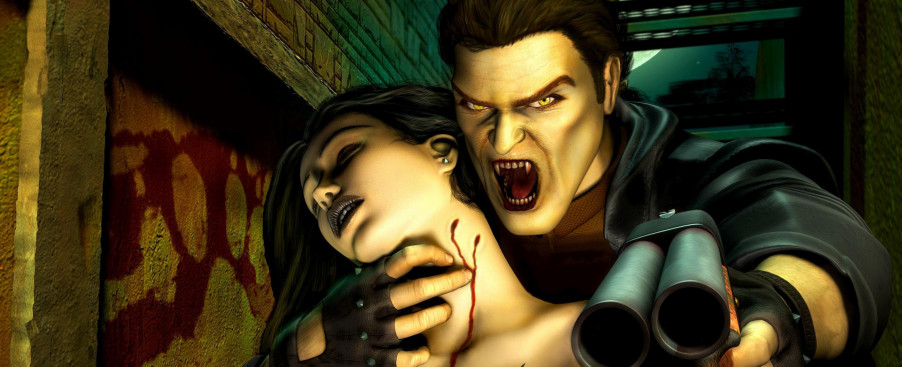
Vampire the Masquerade: Bloodlines была создана по мотивам настольной ролевой игры Vampire the Masquerade, которая впервые появилась ещё в далёком 1991 году. Её действие происходило в Мире Тьмы, этакой альтернативной реальности современного мира, в котором бок о бок с людьми живут вампиры, оборотни, зомби, демоны и прочая всевозможная нечисть. У вселенной Мира Тьмы так же, как и у других крупных настольных систем, есть и свои сеттинги, один из которых и носит название Vampire the Masquerade. Он и был взят за основу сабжа.
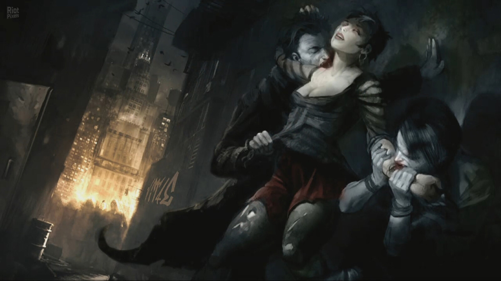
У Мира Тьмы очень интересная мифология. Конечно, раскрыть её со всеми подробностями в одной игре – задача нереальная, однако основные её аспекты создатели Bloodlines передали, да не просто куском текста прямо в лоб, а органично вплетя в основную канву.
В центре внимания конкретно этого сеттинга находятся вампиры – потомки небезызвестного библейского персонажа Каина. Совершив убийство своего брата Авеля, Каин был проклят и начал скитаться по земле, употребляя в пищу человеческую кровь. При этом его проклятье могло передаваться другим людям, и, таким образом, были порождены Патриархи – родоначальники 13 Великих вампирских кланов. Эти кланы не были едины, но составляли союзы, которые между собой войны.
К настоящему времени (речь идёт о сторонах, представленных в VtM — Bloodlines) сложилось 4 силы: Камарилья – крупнейший из союзов кланов, подчинённых строгой иерархии и соблюдающих древние вампирские традиции; Шабаш – кланы, которые противостоят насаждению власти Старейшин, они не только отрицают заветы Патриархов, но и полностью отдаются своей тёмной натуре, отвергая всё человеческое; Квей-джин – нежить, которая имеет много общего с вампирами, также как и во многом от них отличается, эти восточные вампиры имеют иное происхождение, а вместо крови, они питаются жизненной энергией и вообще всё делают строго по Феншую; и наконец Анархи – это объединение выходцев из различных кланов, восставших против давления власть имущих не только Камарильи, но и Шабаша и вообще всех, кто пытается прибрать власть к своим рукам, вампиры-анархи стремятся к независимости и равенству среди себе подобных.
И в центре этого противостояния волею случая оказывается простой парень… или девушка – это уже было на наше усмотрение…
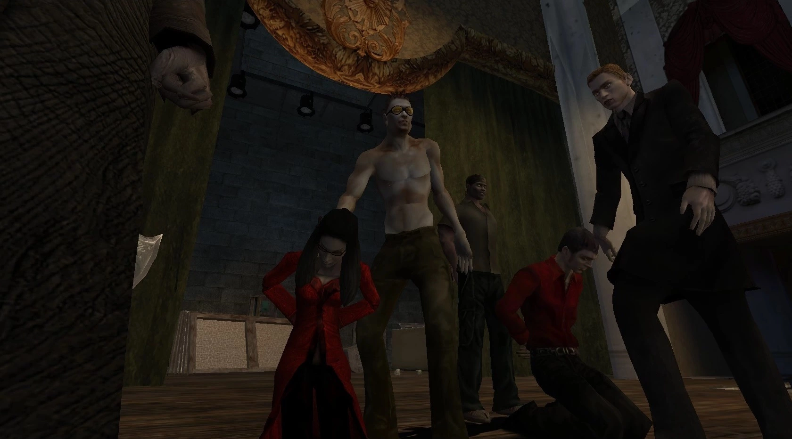
В Vampire the Masquerade: Bloodlines представлены далеко не все существующие в сеттинге кланы. На самом деле их ГОРАЗДО больше, но подумайте, какая бы каша образовалась в голове незнакомого с настолкой игрока.
Перед нами Лос-Анджелес начала 2000-х. Однако не «солнечная» его сторона, а тёмная, не только потому что нас окунают в общество вампиров, но и потому что мы опускаемся на самое дно этого общества. Игроку предстояло иметь дело с бандитами, бомжами, панками, проститутками, стриптизёршами и прочими сливками маргинальной массы.
Главный герой – простой смертный, который хотел потусоваться, снять себе на ночь симпатичную девочку или мужика… но оказавшись с ней (или с ним) в постели, наш протеже становится жертвой вампира. Но мало того, что нас покусали и соснули кровушки, так наш случайный партнёр ещё и обращает ГГ в такого же полуночного упыря. Но не успевает герой (или героиня) прийти в себя, как в комнату вламываются неизвестные, всаживают в нас по осиновому колу и утаскивают неизвестно куда.
Мы оказываемся на вампирском суде, возглавляемом местным авторитетом — князем ЛаКруа. Он возвещает, что Сородичам, так вампиры называют друг друга, по законам Камарильи запрещено обращать людей в кровососов без ведома князя. Сир, то есть вампир, обративший человека, а также сам новообращённый в случае нарушения закона подлежали смертной казни. Так должно было случиться и в этот раз. Однако глава Анархов, Найнс Родригес, встал на защиту новичка. ЛаКруа понимал, что многие поддерживали Найнса, а потому решил пощадить нашего персонажа и дать ему шанс влиться в общество вампиров.
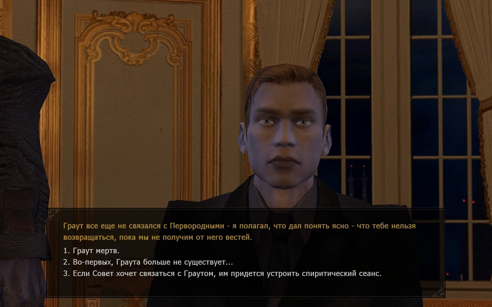
Этого дядьку можно было бы называть главным злодеем, однако он не сильно отличается от всех прочих персонажей: здесь нет «друзей», каждый использует главного героя в своих целях, а на новоиспечённого вампира им, в общем-то, плевать.
С этого начинался наш нелёгкий путь по ночным улицам Лос-Анджелеса, где вампиры пьют людей, убивают друг друга, где главы кланов плетут интриги, и некое неизвестное чудовище устраивает бойни, жестоко расправляясь со всеми без разбора.
НЕБОЛЬШОЙ СПОЙЛЕР
Весь дальнейший сюжет крутится вокруг древнего артефакта — Анкраского саркофага, — в котором покоится допотопный месопотамский царь. Существовала легенда, что это был один из древнейших вампиров, возвращение которого знаменовало пришествие Конца, Геены, как его называли Сородичи. В это верили далеко не многие, однако ЛаКруа жаждал обладать этим артефактом, а, чтобы его заполучить, он использует главного героя. Нам предстояло участвовать в тайных вампирских операциях, убивать себе подобных, чтобы в итоге заполучить саркофаг и раскрыть его тайны. Ближе к концу нам предлагали выбрать одну из противоборствующих сторон, да ещё и решить собственноручно ли открывать саркофаг или доверить его судьбу другим Сородичам. Из этих решений складывалось 6 концовок, некоторые из них отличались друг от друга не сильно, и всё же это был хороший стимул для того, чтобы пройти игру снова.
В самом начале, как и полагается в ролевых играх, нам давали создать своего персонажа. Это можно было сделать 2 способами. Первый представлял вполне себе обычную полную настройку героя вручную самим игроком. А вот второй живо напомнил мне Морровид: помните, в третей ТЕS мы отвечали на вопросы Гэндальфа, как только прибывали в Сейда Нин, и уже результаты этого опроса формировали наш класс и распределяли навыки. Здесь же мы делаем то же самое, только вопросы шли из ниоткуда, а не от конкретного NPC. Вместо классов в Bloodlines были вампирские кланы, каждый из которых имел свои специфические особенности. Ваш выбор влиял не только на список характеристик героя, но и на взаимодействие с миром игры в целом. Играя за члена клана Носферату герой должен был избегать людей и ползать по канализации, чтобы те его не видели по причине уродливой наружности. Малкавиане – клан поехавших кровососов, открывают особые реплики в диалогах, но кроме того мучаются видениями и галлюцинациями. А Тремер обладают уникальными магическими способностями, но при этом физически слабее прочих вампиров. И подобные особенности есть у каждого клана.
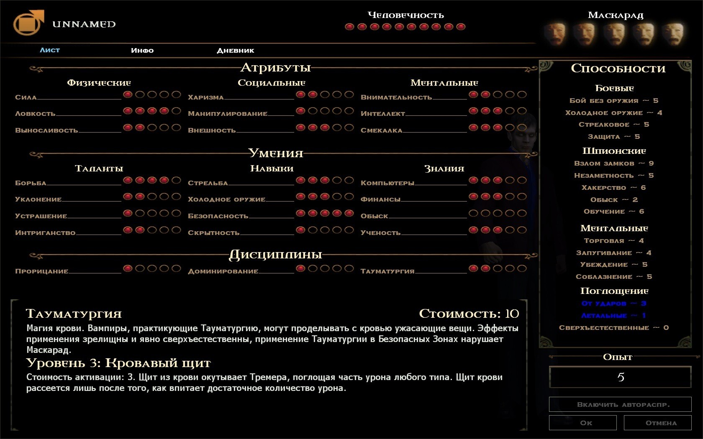
На первый взгляд такое количество характеристик заставляет глаза разбегаться и недоумевать, но со временем вся та система постепенно укладывается в голове.
Все характеристики распределены по 4 разделам: атрибутам, умениям и дисциплинам, которые формируют ваши способности. Уровней и опыта в игре нет, есть только специальные очки, которые герой получает, выполняя задания. Их мы и тратим на улучшение того или иного параметра, и чем они выше, тем больше требуют очков для дальнейшего повышения. На всё очков не хватит, поэтому лучше сразу определиться со своей тактикой и выбрать те умения, атрибуты или дисциплины, которые вы намереваетесь использовать больше всего. Выбор здесь просто огромнейший: от владения оружием, хакерства и взлома замков, до соблазнения, торговли и сверхспособностей. В игре есть специальные «учебники», повышающие отдельные характеристики, но для их прочтения также необходим высокий уровень «обучения», а также определённый базовый уровень той способности, которую этот учебник повышает.
Однако, это не все параметры, за которыми стоит следить игроку. Также здесь есть и ещё 2 особых показателя: «человечность» и «маскарад». В них отражаются ваши действия на улицах Лос Анджелеса: чем «человечнее» вы себя ведёте, тем больше герой собственно будет походить на человека — с ним почти никогда не случатся припадки безумия (если вы не будете долго держать его на безкровной диете), и он вполне спокойно сможет общаться с людьми. Если же вы будете убивать людей и творить прочие зверства, ваш герой будет становиться все более асоциальным, резок в общении, и наконец периодически начнёт впадать в Безумие, при котором становится неконтролируемым. Маскарад же отвечает за скрытность бытия вампиров. Каждый раз, когда вы будете творить сверхъестественные вещи на глазах у простых смертных, вы будете терять единицу «маскарада», и как только все 5 масок в шкале будут потеряны, игра закончится.
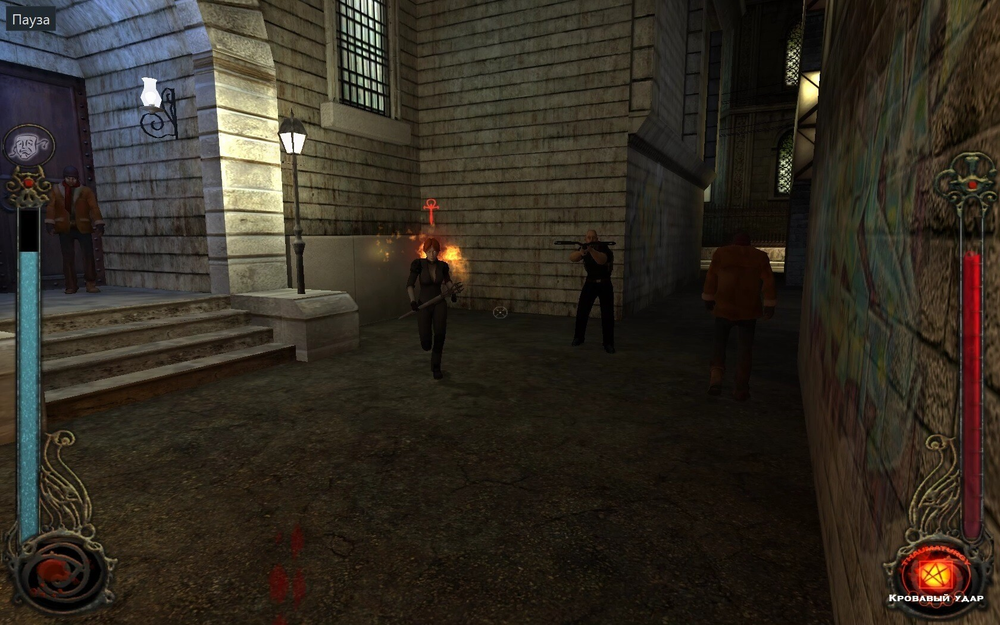
Когда герой потеряет несколько «масок», охотники на вампиров начинают замечать нас, и высылают группы зачистки. С факелами, арбалетами – как и подобает изгонять нечисть…
Vampire the Masquerade: Bloodlines одна из тех игр, которые потрясают своим обилием героев, причём обычно, в таких случаях, характерами наделяют лишь важных по сюжету NPC, а всех остальных оставляют неприметными картонками на фоне. В Bloodlines каждый персонаж – это личность со своими особыми чертами, которые отличают её от других. Герои кажутся настолько живыми и натуральными, что кажется, будто за каждым из них стоял живой человек… ну или вампир. Это касается не только разнообразных по тону и глубине реплик, но и даже внешне: все их эмоции ярко отражаются в мимике, и для игры 2004 года это был настоящий прорыв.
Грозный, но добродушный байкер Джек, поехавшая владелица клуба Asylum с раздвоением личности, помешанный на крови и убийствах санитар госпиталя, который толкает вампирам донорскую кровь, сексапильная Вельвет из Везувия, Толстый Ларри, стерва Дамзел, Ималия, Гэри Голден, Беккет, офицер Чанк, Ромеро, Меркурио… я запомнил даже бомжиху-предсказательницу с пляжа Санта-Моники! Персонажей ОЧЕНЬ много и каждый чем-то да зацепит, даже какой-нибудь эпизодический вроде Лили, которую морили голодом и истязали санитары в подвале больницы. Такое я встречал далеко не в каждой игре.
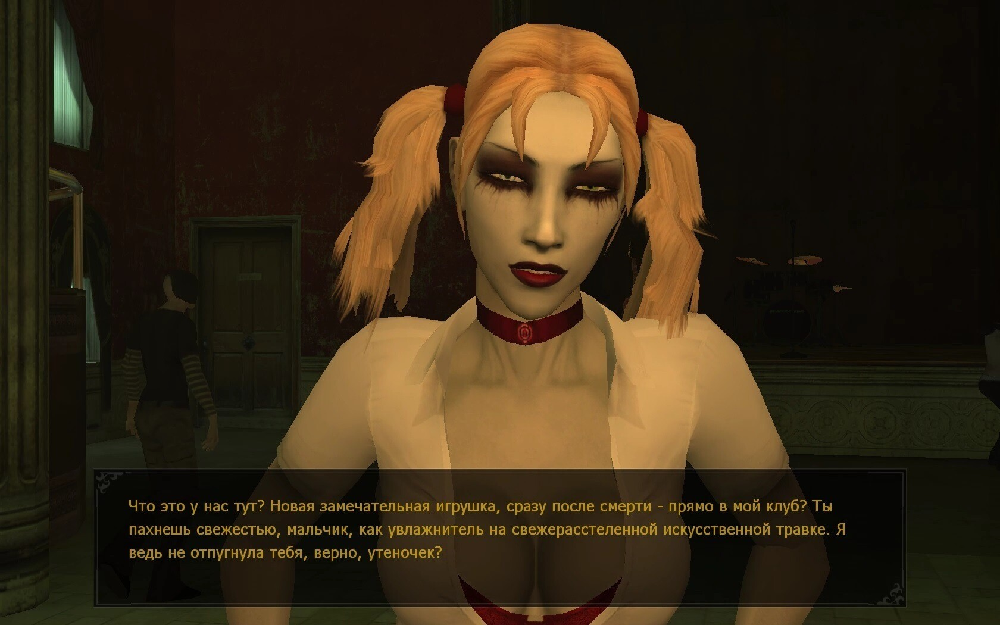
Сёстры близняшки Жанетт и Тереза – одни из самых запоминающихся персонажей в Bloodlines, одна из них стала даже символом игры… есть у них и одна маленькая тайна, но это уже spoiler)
И здесь же ещё одна особенность. Это квесты. Опять же, мы привыкли к тому, что в большинстве игр интерес может вызвать лишь основная цепочка заданий, а побочные зачастую скатываются в «убей-принеси». В Bloodlines, относительно общей массы заданий, подобная банальщина сведена к минимуму. Дополнительные квесты не уступают основным, а порой выполнять некоторые побочки мне было даже интереснее. Взять хотя бы тот же квест с Лили или «Веселье во время чумы», чего только стоила встреча с главой русской мафии Борисом!
Во многих заданиях, как основных, так и побочных, нам приходится проводить собственное расследование: искать зацепки, опрашивать NPC или добывать информацию самостоятельно из компьютеров и дневников, в общем можно вполне почувствовать себя начинающим вампирским детективом. Некоторые задания необходимо проходить в строгой конспирации: втайне пробраться на склад, взломать компьютер, запустить вирус и также незаметно, без убийств выбраться наружу. А вот в иных квестах, не только разрешалось сносить головы, но это становилось и главной задачей.
Описание боевой системы я оставил напоследок, просто потому что в ней кроется главный изъян Vampire the Masquerade: Bloodlines. Она попросту кривая и скучная, как в плане самой системы в целом, так и в неадекватном поведении противников. Противостоять живым и неживым наш герой может как при помощи оружия ближнего и дальнего боя, так и голыми руками, подкрепляя свои удары магией крови. Поначалу я брезговал боем без оружия, и даже не стал вливать в этот пункт характеристик лишние очки, но уже потом понял, что голые кулаки куда более эффективны, чем те же бита или нож. Конечно, было забавно размахивать мёртвой рукой, отнятой у психопата, который похищал и расчленял людей у себя в подвале, но очень скоро я наигрался и оставил её как трофей в инвентаре.
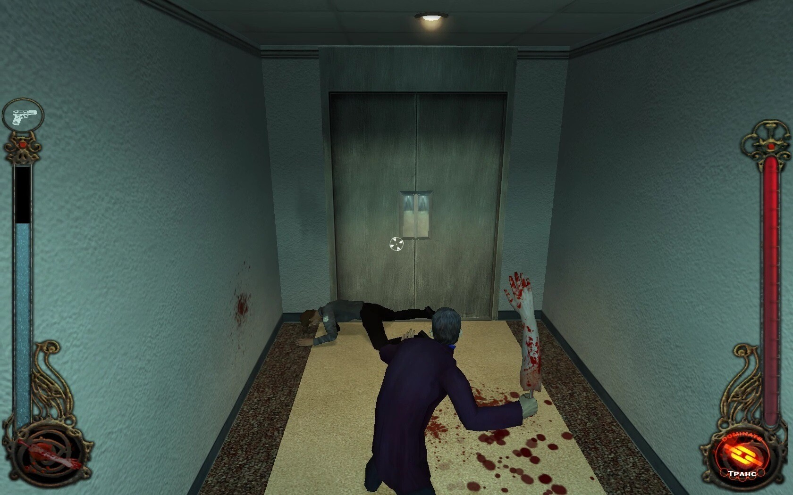
Та самая мёртвая рука, которую можно использовать как оружие. Сразу вспоминается эпизод из фильма «Shaun of the Dead», когда Диана, вооружившись ногой погибшего парня, отправилась мстить живым мертвецам.
Пользоваться огнестрельным оружием, пока не разовьёшь соответствующий навык, очень неудобно. Слишком большой разброс, слишком сильная отдача и малая скорострельность. Я пользовался стволами, только при встрече с особо крупными тварями и боссами, и даже тогда можно было вполне обойтись магией. Магических приёмов в игре аж 9 штук: одни дают временные бафы на скорость или некоторые параметры характеристик, а что-то можно использовать как альтернативу огнестрелу. И вот они как раз и являются самым действенным оружием на пару с кулаками.
Под магию специально выделялась отдельная шкала крови, которая пополнялась, как и полоса жизни за счёт пакетов с кровью, заменяющих аптечки, и, разумеется, за счёт сосудов дышащих и ходячих. Да, как это неудивительно, но нашему вампиру необходимо пить кровь. Именно необходимо, потому что после долгого голодания он начнёт звереть. Пить можно как бомжей в подворотнях и канализационных крыс, так и более обеспеченных членов общества, главное, чтобы никто не видел, как вы это делаете, иначе, вы нарушите правило Маскарада. Если уровень соответствующего атрибута будет позволять, то вы можете соблазнять посетительниц клубов и пить у них кровь прямо при всех. Также к вашим услугам всегда есть уличные шлюхи: просто даёте им немного денег, отходите с ними в переулок и… начинаете сосать у них кров.
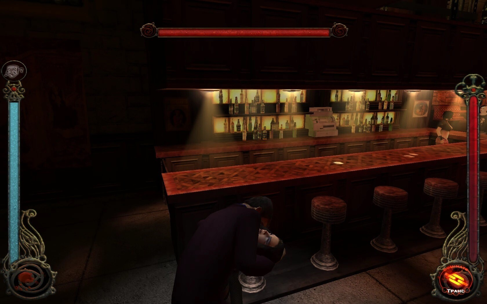
Я хочу тебе кое-что сказать, подойди поближе...
Вообще по части атмосферы игра была просто бесподобна. Такого Лос-Анджелеса я ещё не видел. Мрачный, местами даже страшный, полный маргиналов и люмпенов. Бомжи греются у бочек, кто-то стоит и ссыт на стены, кто-то рисует на них из баллончиков. Один раз я даже застал перестрелку местных панков. Своя заслуга в создании атмосферы есть и у саундтрека: одинаково хороши как фоновые эмбиэнты, так и песни различных исполнителей, играющие в клубах. Часть из них непременно запоминается.
Кроме всего вышеупомянутого в игре есть и множество отсылок: гипотеза «Ван Хельсинга», упоминаемая в башне Синдиката; парень по имени Ромеро, живущий на кладбище и отстреливающий зомби (думаю, в пояснении не нуждается); театр Ноктюрн в Даунтауне напомнил мне об одноимённой игре про вампиров 1999 года; а над одним из зданий в квартале Голливуда расположился плакат с логотипом самой Troika Games. И это только те, которые встретил и запомнил я, на самом деле их куда больше.
***
Когда игра только вышла, она была сырой и полной багов из-за чего и потерпела коммерческий крах, утянувший за собой и всю компанию. Однако заложенные Тройкой основы не пропали даром. В них был огромный потенциал, за раскрытие которого взялись сами игроки. Они долгое время мастерили патчи, исправляли ошибки, возвращали вырезанный контент и всячески дорабатывали то, что оставила нам в наследие Тройка. И если раньше игру можно было пройти лишь с большим трудом, пробравшись через море глюков, то сейчас это вполне себе играбельный продукт, пусть некоторые проблемы и остались, но, пожалуй, это лучшая игра, посвящённая вампирам.
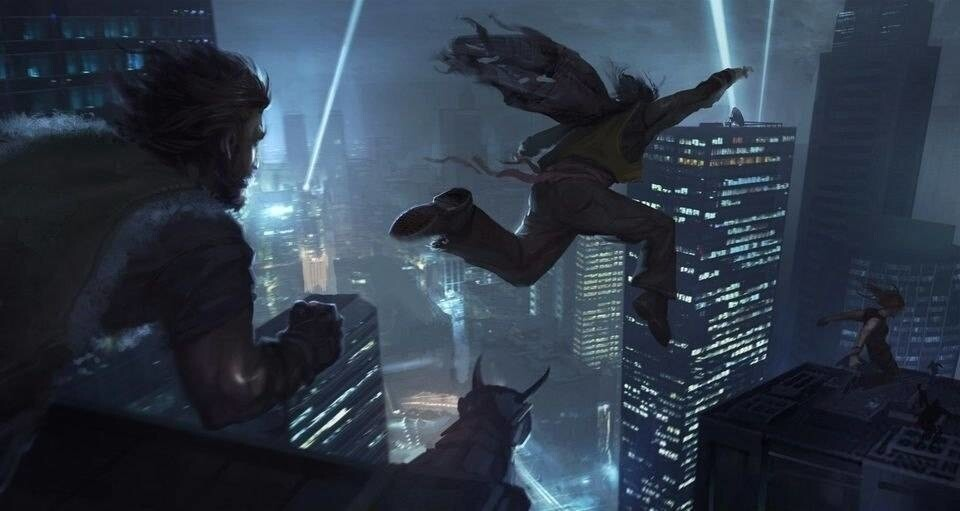
Культовые игры бессмертны, в них можно играть спустя десятилетия и получать всё то же удовольствие, а в случае с Bloodlines, это удовольствие гораздо большее. Поэтому я призываю Вас не предавать этот проект забвению, и познакомиться с ним, если вы этого ещё не сделали, а в ином случае — пройти игру снова. Она стоит того.
P.S. Ох, Вельвет… Я тебя не забуду...
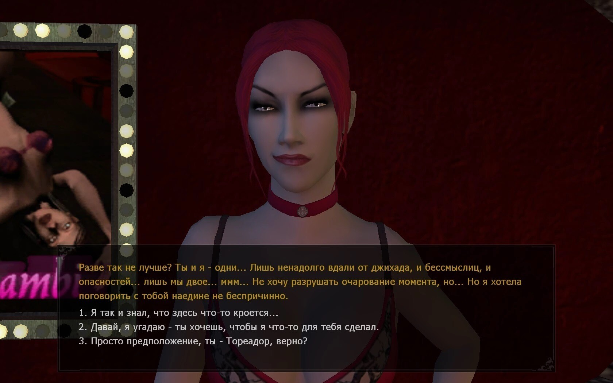